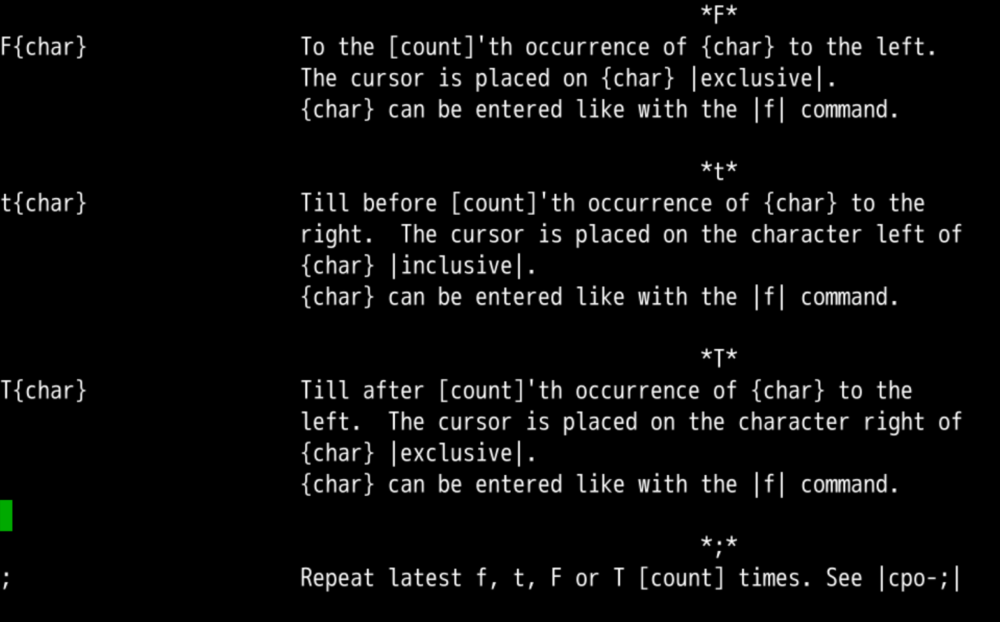
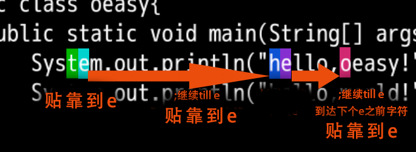
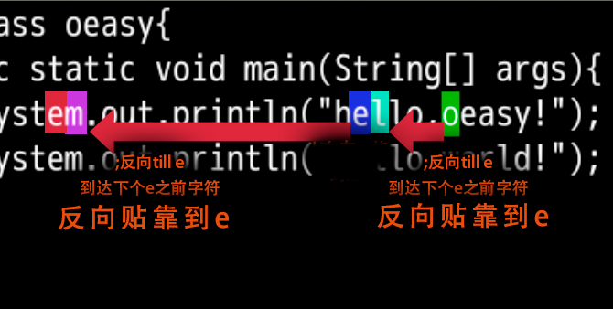
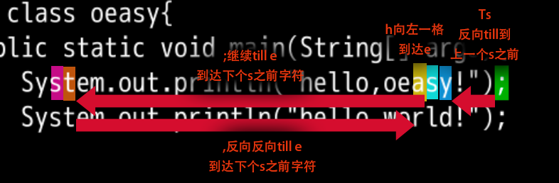
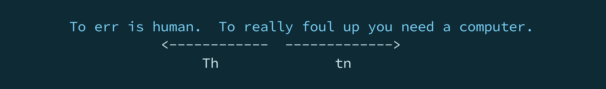

行头行尾
回忆上节课内容🤔

- 跳跃
- 向前跳跃是 f
- 向后跳跃是 F
- 继续
- 保持方向是 ;
- 改变方向是 ,
- 可以加上
[count]来加速 - 还有什么好玩的吗？🤔
动手
#这次还是用无配置的方式启动
vi -u NONE oeasy.java
:h f继续查找周围的命令- f 旁边还有
- t
- T
- 这两个是干什么用的？
- 我们来看一看👀
查看帮助

- 含义不同
- f 对应的单词是
find找到 - t 对应的单词是
till贴靠
- f 对应的单词是
- 位置不同
- f 光标直接跳到查找的字符上
- t 光标跳到查找字符的前一个字符上，贴靠着查找字符
试一试

- fe 是把光标移动到
e上面 - te 是把光标移动到
e之前的字符上面 - ; 还可以继续吗？
- 好像不行，怎么办？
继续移动
- 小拇指直接落在 ;
till下一个e
- 再 l 把光标移动到
e上面 - 再小拇指落 ;
till下一个e
- 在 ; 的过程中
- 重复的操作仍然是
till till的对象仍然是e

- 我们是否可以反方向 , 呢？
继续反向 till

- , 改变查找方向
- 模式仍然是
till模式 - 字符仍然是
e - 找到左边最近的
e的前一个字符的位置 - 还想继续不可能
- 模式仍然是
- 还是因为已经到达了
e的前一个字符的位置- 于是要向左到
e - 这样就可以继续向左查找了
- 于是要向左到
直接反向

- T 向左进行贴靠
- ; 保持方向
- , 改变方向
- 反向的反向就是正向
- 可以反复横跳

翻倍
- 2 t o
till第2个o - ; 保持查找方向不变，继续向前
till下一个o - , 反向
till上一个o - 2 ; 保持查找方向不变，向前
till到第 2 个o - 2 , 改变方向，
till第 2 个o

总结
- 贴靠
- 向前贴靠是 t
- 向后贴靠是 T
- 继续
- 保持方向是 ;
- 改变方向是 ,
- 可以加上
[count]来加速 - 行内左右移动好像，到这里接结束了？后面还有什么呢？
- 下次再说 👋